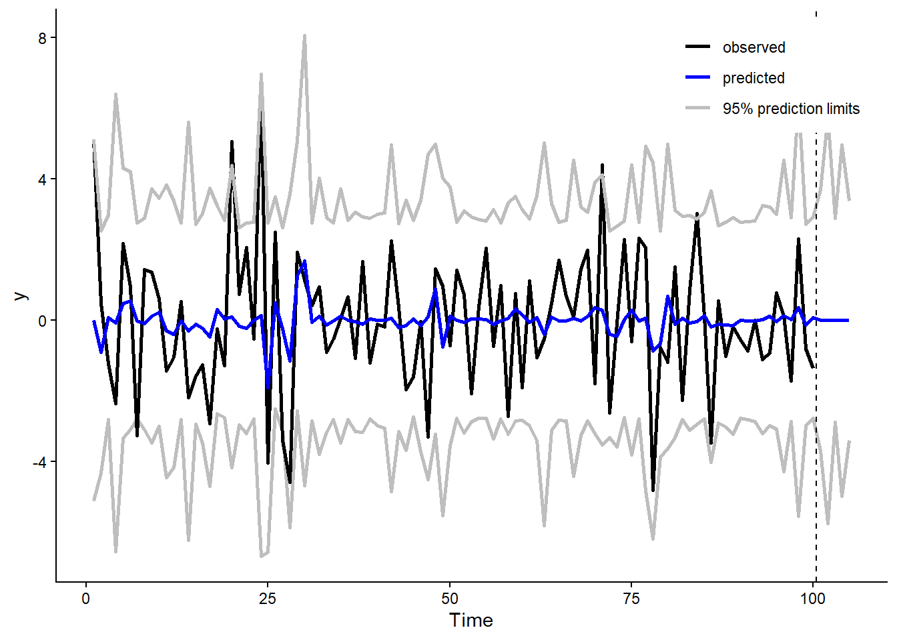
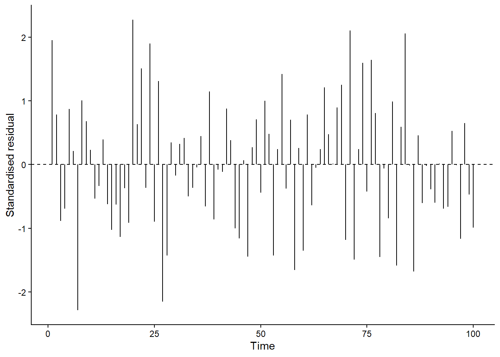
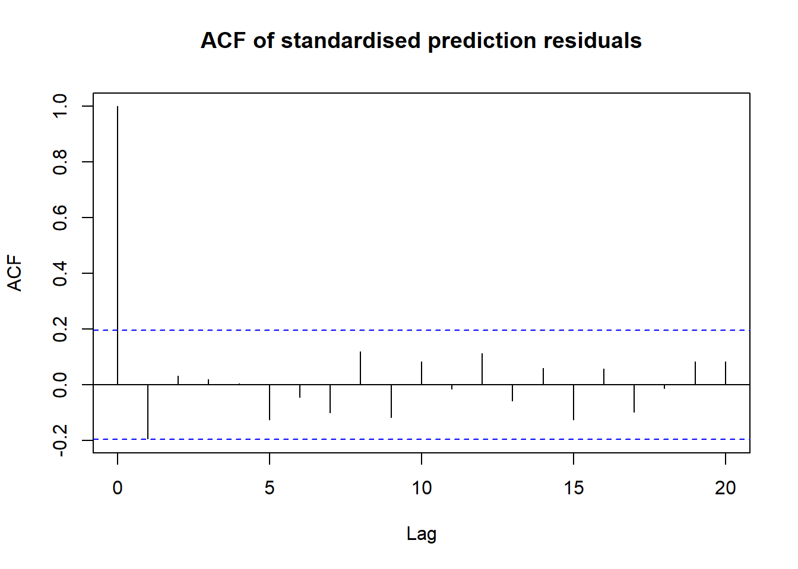
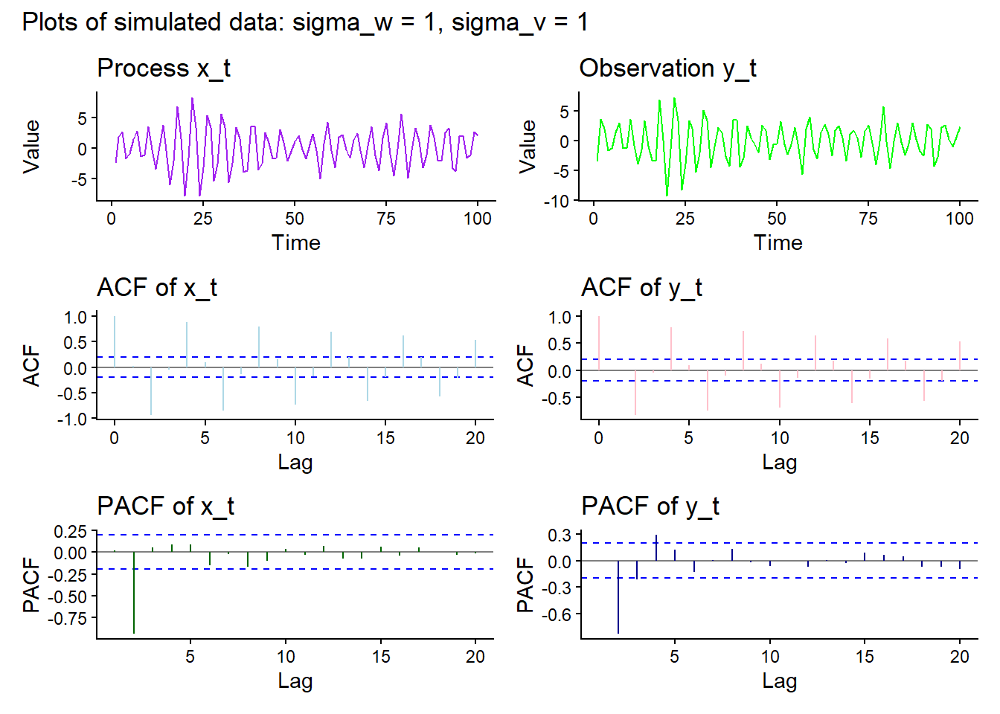

Warning: package 'forecast' was built under R version 4.5.3
Warning: package 'fma' was built under R version 4.5.3
Warning: package 'expsmooth' was built under R version 4.5.3
Show R code
library(dlm)
Warning: package 'dlm' was built under R version 4.5.3
Attaching package: 'dlm'
The following object is masked from 'package:ggplot2':
%+%
Question 1
Question 1
Show R code
# variance values V <-2W <-1# function for gtgt <-function(t){ (-1)^t/2}# initial values for the Normal distributionm0 =0C0 =1# function for ft as given Ft <-function(t){rnorm(1, 0.2)}# initialising vectors y, theta and f values for 100 observationsyt <-numeric(100)theta <-numeric(100)F_values <-numeric(100)# first thea value meantheta_previous <-rnorm(1, mean = m0, sd =sqrt(C0))# loop for simulating latent gdp values and the observed values for (i inseq_len(100)) { F_values[i] <-Ft(i) theta[i] <-gt(i) * theta_previous +rnorm(1, mean =0, sd =sqrt(W)) yt[i] <- F_values[i] * theta[i] +rnorm(1, mean =0, sd =sqrt(V)) theta_previous <- theta[i]}
In the code, theta[i] represents the underlying, unobserved state at time (i), while yt[i] represents the observed data. Random noise is included in both equations to account for process and measurement uncertainty. Process noise allows the underlying state to vary beyond what is explained by the state transition equation. Measurement noise represents variation in the observations around F_values[i] * theta[i], so the observations do not reveal the underlying state exactly.
The coefficient gt(i) determines how the previous hidden state contributes to the current state. In this model, it alternates between −0.5 and 0.5. The coefficient F_values[i] links the current hidden state to the observed data by multiplying theta[i]. Both coefficients vary over time.
2. Use the Kalman Filter for parameter estimation and to fit the model. Write your own code for the Kalman Filter, not using R package functions.
I used the one in the textbook as the template. I changed tweaked the function to not use the full vectors as the coefficients F and G are not constant but change with time.
In the function the prediction error, et[i], is the difference between the observed and predicted values. It provides new information for updating our estimate of the hidden state. The Kalman filter adjusts the predicted state mean by Kt * et[i], where Kt is the Kalman gain and determines how the prediction error affects the update.
When measurement noise is high, the Kalman filter gives less weight to the observations when updating the state estimate. Holding the other quantities fixed, a larger measurement variance reduces the magnitude of the Kalman gain, so the filter relies more on its predicted state.
The function checks whether y[i] is missing. If it is, there is no observation available to update the predicted state, so the Kalman gain is set to zero. The updated state mean and variance therefore remain equal to their predicted values. This allows the Kalman filter to handle missing observations and continue predicting.
3. Forecast up to \(h = 5\), with prediction intervals.
Show R code
n <-length(yt)h <-5# forecasting horison# Missing future observationsy <-c(yt, rep(NA, times = h))# Generate future observation coefficientsFF <-c(F_values, sapply((n +1):(n + h), Ft))fit <-Kfilter(FF = FF, GG = gt,m0 = m0, C0 = C0, W = W, V = V, y = y)# conbined the actual y values, predicted and intervals as wellvals <-cbind(observed = y,predicted = fit$ft,lower = fit$ft -1.96*sqrt(fit$Qt),upper = fit$ft +1.96*sqrt(fit$Qt))# plotting of the prediction invervals for the data plot_data <-data.frame(time =seq_len(nrow(vals)), vals) |>pivot_longer(cols =-time,names_to ="series",values_to ="y" )ggplot(plot_data, aes(time, y, colour = series)) +geom_line(linewidth =1, na.rm =TRUE) +geom_vline(xintercept = n +0.5, linetype ="dashed") +scale_colour_manual(values =c(observed ="black", predicted ="blue",lower ="grey", upper ="grey" ),breaks =c("observed", "predicted", "lower"),labels =c("observed", "predicted", "95% prediction limits") ) +labs(x ="Time", y ="y", colour =NULL) +theme_classic() +theme(legend.position ="inside",legend.position.inside =c(0.98, 0.98),legend.justification =c(1, 1) )

Show R code
# Display the five forecastsvals[(n +1):(n + h), ]
observed predicted lower upper
[1,] NA 1.989404e-03 -3.691658 3.695637
[2,] NA -2.028785e-03 -5.746013 5.741956
[3,] NA 1.551689e-04 -2.877076 2.877387
[4,] NA -4.142107e-04 -4.967466 4.966638
[5,] NA -9.748918e-05 -3.383688 3.383493
The code below shows the appending of the 5 values because appending five missing values extends the observation vector to include the forecast horizon. At each future time point, the filter predicts the state and observation. Because the future observation is missing, it skips the observation update and carries the predicted state forward to generate the next forecast.
The predicted values show much less variation than the observed values and remain close to zero. This is because they represent the expected observations, while the actual observations include process and measurement noise. The observed values appear to fall within the 95% prediction limits. The vertical dashed line separates the observed period from the forecast period, which extends five time steps ahead.
4. Plot data with fitted and filtered level estimates.
In the observation plot, the one-step fitted values (fitted_kf$ft, blue) use information from previous observations, while the filtered observation estimates (F_values * fitted_kf$mt, green) also incorporate the current observation. The green line generally follows the observed values more closely than the blue line. In the filter code, the state mean is updated using mt[i] = at[i] + Kt * et[i], so the Kalman gain determines how much the prediction error adjusts the estimate.
In the state plot, the filtered level (fitted_kf$mt, green) captures some movements in the true simulated level (theta, grey), but misses several peaks and troughs. This is because the hidden state is estimated from noisy observations rather than observed directly. Although the filter accounts for process and measurement uncertainty through W and V, it cannot perfectly separate the state from the noise, so uncertainty remains after the update.
5.Calculate the residuals and show an autocorrelation plot.
Show R code
# redisuals extracted residuals <- yt - fitted_kf$ft# scaled standardised_residuals <- residuals /sqrt(fitted_kf$Qt)# plot of residuals scaledresidual_data <-data.frame(time =seq_along(standardised_residuals),residual = standardised_residuals)ggplot(residual_data, aes(x = time, y = residual)) +geom_segment(aes(xend = time, y =0, yend = residual)) +geom_hline(yintercept =0, linetype ="dashed") +labs(x ="Time", y ="Standardised residual") +theme_classic()

Show R code
# acf plotacf(standardised_residuals,main ="ACF of standardised prediction residuals")

If the model captures the time dependence well, I would expect no significant autocorrelation in the standardised prediction residuals at non-zero lags. The ACF plot shows no significant spikes beyond lag 0, which supports this expectation and suggests that the model has adequately captured the time dependence. The spike at lag 0 is expected because each residual is perfectly correlated with itself.
Question 2
1.
{width="70%" fig-align="center"}
2. Find the values of \(\sigma_0^{2}\)and \(\sigma_1^{2}\) that make the observations, stationary.
the able shows that they are both the same. Both initial states are assigned the stationary variance so that the process has the same variance from the start. Otherwise, the variance would change over time as it approached its long-run value. Here, the stationary variance is (1/(1-0.9^2)).
3. Generate \(n = 100\) observations with \(\sigma_w = 1\),\(\sigma_v = 1\) and using the values of \(\sigma_0^2\) and\(\sigma_1^2\) found in (b). Do a time plot of \(x_t\) and of\(y_t\) and compare the two processes. Also, compare the sample ACF and PACF of \(x_t\) and of \(y_t\).
Show R code
# function to simulate and plot the observationssimulate_and_plot <-function(sigma_v, part_label) { x <-numeric(n +2) y <-numeric(n)# Initial states x[1] <-rnorm(1, mean =0, sd = sigma_1) x[2] <-rnorm(1, mean =0, sd = sigma_0)# Process and measurement noise w <-rnorm(n, mean =0, sd = sigma_w) v <-rnorm(n, mean =0, sd = sigma_v)for (t inseq_len(n)) { x[t +2] <--0.9* x[t] + w[t] y[t] <- x[t +2] + v[t] } x_t <- x[3:(n +2)]# Helper for time plots time_plot <-function(values, title, colour) {ggplot(data.frame(time =seq_along(values), value = values),aes(time, value) ) +geom_line(colour = colour) +labs(title = title, x ="Time", y ="Value") +theme_classic() }# Helper for ACF and PACF plots correlation_plot <-function(values, type, title, colour) { result <-if (type =="ACF") {acf(values, plot =FALSE) } else {pacf(values, plot =FALSE) } correlation_data <-data.frame(lag =as.numeric(result$lag),correlation =as.numeric(result$acf) ) bound <-qnorm(0.975) /sqrt(length(values))ggplot(correlation_data, aes(lag, correlation)) +geom_hline(yintercept =0, colour ="grey50") +geom_hline(yintercept =c(-bound, bound),linetype ="dashed",colour ="blue" ) +geom_segment(aes(xend = lag, yend = correlation),y =0, colour = colour ) +labs(title = title, x ="Lag", y = type) +theme_classic() } p1 <-time_plot(x_t, "Process x_t", "purple") p2 <-time_plot(y, "Observation y_t", "green") p3 <-correlation_plot(x_t, "ACF", "ACF of x_t", "lightblue") p4 <-correlation_plot(y, "ACF", "ACF of y_t", "pink") p5 <-correlation_plot(x_t, "PACF", "PACF of x_t", "darkgreen") p6 <-correlation_plot(y, "PACF", "PACF of y_t", "darkblue") combined <- ((p1 | p2) / (p3 | p4) / (p5 | p6)) +plot_annotation(title =paste0( part_label, ": sigma_w = ", sigma_w,", sigma_v = ", sigma_v ) )print(combined)}simulate_and_plot(sigma_v =1, part_label ="Plots of simulated data")

The time plots show that the observed series (y_t) generally follows the pattern of the hidden process (x_t). Measurement noise adds variation around this pattern and makes some underlying movements less clear, although the main fluctuations remain visible when (_v = 1).
The ACF plots show similar patterns, with alternating negative and positive correlations at even lags. The correlations in (y_t) are generally slightly weaker because independent measurement noise increases the variance without adding autocovariance at non-zero lags.
The PACF plots show their strongest negative spike at lag 2, consistent with the model (x_t = -0.9x_{t-2} + w_t). For (x_t), this reflects the AR(2) structure, with no direct lag-1 effect. The observed series retains a strong lag-2 relationship, although measurement noise alters its PACF, so it need not cut off after lag 2.
When (_v) increases to 10, the time plots of the hidden process and the observations look much more different. Measurement noise dominates (y_t), largely concealing the pattern of (x_t).
The dependence structure is also less visible in the observation ACF and PACF. The PACF of (x_t) still shows a strong spike at lag 2, consistent with the underlying model, whereas the PACF of (y_t) shows an isolated significant spike around lag 12. This spike may reflect sampling variation rather than a genuine lag-12 relationship. If the only significant ACF spike is at lag 0, it provides no evidence of serial dependence, since the lag-0 correlation is always 1.
Compared with part (c), the larger measurement noise makes the observations less informative about the hidden process. This illustrates the value of state estimation, which combines the process model with noisy observations to estimate the underlying state and quantify uncertainty.
Question 3
The secod difference removes the level and slope, leavin a fixed cobination of white noise terms. The autocorrealtion of them only depends on the lag and so therefore weak stationarity is acheived.
Question 4
In this exercise, you will write your own code for updating regression coefficients using a Kalman filter. We will model quarterly growth rates in US personal consumption expenditure (\(y\)) against quarterly growth rates in US real personal disposable income (\(z\)). So the model is \(y_t = a + bz_t + e_t\).
The corresponding state space model is
\[
\begin{aligned}
y_t &= a_t + b_t z_t + e_t,\\
a_t &= a_{t-1},\\
b_t &= b_{t-1}.
\end{aligned}
\] a) Plot the data (usconsumption[,1], usconsumption[,2]) and fit a linear regression model to the data using the lm function.
Show R code
# importing data, had to use ai to help me find the data because fpp does not exist anymore in R. data("uschange")y <- uschange[, 1] # consumption z <- uschange[, 2] # disposable incomeT_len <-length(y)# making to a data fram to use for lm cons_data<-data.frame(time =as.numeric(time(y)),consumption =as.numeric(y),income =as.numeric(z))# Linear regressionfit1 <-lm(consumption ~ income, data = cons_data)summary(fit1)
Call:
lm(formula = consumption ~ income, data = cons_data)
Residuals:
Min 1Q Median 3Q Max
-2.40845 -0.31816 0.02558 0.29978 1.45157
Coefficients:
Estimate Std. Error t value Pr(>|t|)
(Intercept) 0.54510 0.05569 9.789 < 2e-16 ***
income 0.28060 0.04744 5.915 1.58e-08 ***
---
Signif. codes: 0 '***' 0.001 '**' 0.01 '*' 0.05 '.' 0.1 ' ' 1
Residual standard error: 0.6026 on 185 degrees of freedom
Multiple R-squared: 0.159, Adjusted R-squared: 0.1545
F-statistic: 34.98 on 1 and 185 DF, p-value: 1.577e-08
Show R code
# Plots scatter plots with fitted regression lineggplot(cons_data, aes(x = income, y = consumption)) +geom_point(alpha =0.6) +geom_smooth(method ="lm", formula = y ~ x,se =FALSE, colour ="blue") +labs(title ="US consumption and disposable income growth",x ="Quarterly disposable income growth (%)",y ="Quarterly consumption growth (%)" ) +theme_minimal()
The scatterplot shows a positive association between quarterly disposable income growth and consumption growth. Consumption growth tends to increase as income growth increases, with the fitted regression line making this trend clearer. However, the points show considerable spread around the line, indicating that income growth alone does not fully explain consumption growth. The vertical differences between the observed points and the fitted line are the regression residuals.
2. Write some R code to implement the Kalman filter using the above state space model.
Show R code
# used the textbook version but adjusted based on the dimensions Kfilter <-function(FF, GG, m0, C0, W, V, y) { N =length(y) p =length(m0) at =matrix(0, N +1, p) Rt =array(0, dim =c(p, p, N +1)) ft =numeric(N) Qt =numeric(N) mt =matrix(0, N, p) Ct =array(0, dim =c(p, p, N)) et =numeric(N)## predict state at[1, ] = GG %*% m0 Rt[, , 1] = GG %*% C0 %*%t(GG) + Wfor (i inseq_len(N)) { Fi = FF[i, , drop =FALSE]## predict observation ft[i] = Fi %*% at[i, ] Qt[i] = Fi %*% Rt[, , i] %*%t(Fi) + V## posteriorif (is.na(y[i])) { et[i] =0 Kt <-matrix(0, p, 1) } else { Kt <- Rt[, , i] %*%t(Fi) / Qt[i] et[i] = y[i] - ft[i] } mt[i, ] = at[i, ] +drop(Kt * et[i])# Numerically stable covariance update A =diag(p) - Kt %*% Fi Ct[, , i] = A %*% Rt[, , i] %*%t(A) + V * Kt %*%t(Kt)## predict next state at[i +1, ] = GG %*% mt[i, ] Rt[, , i +1] = GG %*% Ct[, , i] %*%t(GG) + W }colnames(mt) =c("a", "b")return(list(at = at, Rt = Rt, ft = ft, Qt = Qt,mt = mt, Ct = Ct, et = et))}
In the Kalman filter function, Fi <- FF[i, , drop = FALSE] selects the observation matrix row \([1,z_i]\) for the current time point. The first entry multiplies the estimated intercept and the second multiplies the estimated slope. Therefore, ft[i] <- Fi %*% at[i, ] calculates predicted consumption growth as \(\hat{a}_{i|i-1}+z_i\hat{b}_{i|i-1}\)), using the coefficient estimates available before observing the current consumption value.
3. Estimate the parameters \(a\) and \(b\) by applying a Kalman filter and calculate \(\hat{x}_{T|T}\). You will need to write your own code to implement the Kalman filter. The only parameter that has not been specified is \(\sigma^2\). It makes no difference what value you use in your code. Why?
Show R code
# extracting valuesy <-as.numeric(uschange[, "Consumption"])z <-as.numeric(uschange[, "Income"])N <-length(y)# initializing and using the functionFF <-cbind(1, z)GG <-diag(2)W <-matrix(0, 2, 2)V <-1m0 <-c(0, 0)C0 <- V *1e7*diag(2)fit <-Kfilter(FF = FF, GG = GG,m0 = m0, C0 = C0,W = W, V = V, y = y)# Final filtered coefficient estimates)fit$mt[N, ]
a b
0.5451038 0.2806012
The first filtered estimate, fit$mt[1, ], updates the initial coefficient estimates using only the first observation. Each subsequent step incorporates another observation while retaining the information from earlier updates. Therefore, fit$mt[N, ] gives the final intercept and slope estimates using all (N) observations. The choice of (^2) does not affect these coefficient estimates because the common scale factor cancels in the Kalman gain. In the code, C0 is proportional to V and W is zero, so changing V scales both the predicted state covariance and the observation prediction variance by the same factor. Their ratio remains unchanged, giving the same coefficient updates. However, the estimated uncertainty still depends on (^2).
4. Check that your estimates are identical to the usual OLS estimates obtained with the lm function.
The OLS and final Kalman filter estimates agree to three decimal places, with an intercept of 0.545 and a slope of 0.281. This confirms that, with constant coefficients and a diffuse initial prior, the Kalman filter reproduces the OLS estimates to the displayed precision.
5. Use your code to obtain the sequence of parameter estimates given by \(\hat{x}_{1|1}, \hat{x}_{2|2}, \ldots, \hat{x}_{T|T}\).
a b
[1,] 0.316654946 0.3078713
[2,] 1.384651717 -0.7905971
[3,] -0.009212048 0.5361286
[4,] -0.108316241 0.6141210
[5,] -0.221027725 0.8626960
[6,] -0.226788540 0.8509087
The code parameter_estimates <- fit$mt stores the intercept and slope estimates after each observation. Early estimates may fluctuate more because they are based on limited information. As more observations are incorporated, uncertainty about the coefficients decreases and individual observations generally have less influence, so the estimates tend to stabilise.
6. Plot the parameters over time. Does it appear that a model with time-varying parameters would be better?
The intercept estimate fluctuates considerably at the beginning, then settles close to the full-sample OLS estimate. The slope takes longer to stabilise, showing periods of little change followed by further adjustments. Both estimates become more stable as additional observations are incorporated.
These plots alone do not provide strong evidence that time-varying coefficients are needed. The changes may reflect learning about constant coefficients as more data become available, particularly early in the sample. A comparison with a model allowing time-varying coefficients would help assess whether that additional flexibility improves the fit.
7. How would you estimate \(\sigma^2\) using your code?
Show R code
# Fitted values using the final intercept and slopefitted_values <-drop(FF %*% fit$mt[N, ])# Regression residualserrors <- y - fitted_values# Estimate observation error variancesigma2_hat <-sum(errors^2) / (N -2)sigma2_hat
[1] 0.3631358
8. Repeat the above, but this time use the dlm package to implement the Kalman filter. Check that you get the same series of parameter estimates.
Show R code
# model constructiondlm_model <-dlmModReg(X =as.numeric(z),addInt =TRUE,dV = V,dW =c(0, 0),m0 = m0,C0 = C0)# dlm Kalman filterdlm_fit <-dlmFilter(as.numeric(y), dlm_model)# Removes the initial state row to align with fit$mtdlm_estimates <-as.matrix(dlm_fit$m[-1, , drop =FALSE])colnames(dlm_estimates) <-c("a", "b")# comparisoncomparison_h <-cbind(Own_filter =unname(fit$mt[N, ]),dlm =unname(dlm_estimates[N, ]),OLS =unname(coef(fit1)))rownames(comparison_h) <-c("Intercept", "Slope")comparison_h |> knitr::kable(, digits =3, caption ="Table comparing package to function")
Table comparing package to function
Own_filter
dlm
OLS
Intercept
0.545
0.545
0.545
Slope
0.281
0.281
0.281
Show R code
# Compare the complete sequence of estimatesmax(abs(fit$mt - dlm_estimates))
[1] 8.226381e-10
The final coefficient estimates agree across the manually coded Kalman filter, the dlm package and OLS to the displayed precision. Comparing the complete sequence checks that the two Kalman filter implementations agree at every update, rather than only at the final observation. The maximum absolute difference between their sequences is very close to zero, indicating agreement within numerical precision.
Reflection
This tutorial helped me understand how to implement the Kalman filter and how it updates state estimates as new observations become available. I learned to distinguish between the predicted state, which uses past information, and the filtered state, which also incorporates the current observation. Working through the code helped me understand how the prediction error and Kalman gain determine the adjustment, and how missing observations can be handled by continuing prediction without an observation update.
The simulations showed me how measurement noise can conceal the underlying process and weaken the dependence visible in the observed ACF and PACF. I also learned how to verify weak stationarity by examining whether the mean is constant and the autocovariance depends only on the lag. Checking the residual ACF helped me assess whether the model had captured the time dependence.
The most challenging part was understanding how the coefficient estimates stabilize. I learned that changing estimates do not necessarily mean the true coefficients are changing, as the filter is still learning about them. Early estimates use limited information, while later estimates generally become more stable as observations accumulate. Comparing my implementation with OLS and the dlm package gave me more confidence in the code and helped connect the state space approach to familiar regression methods.